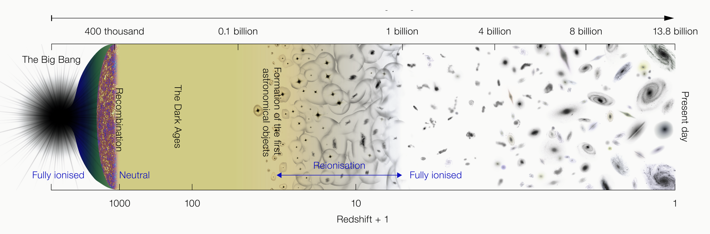
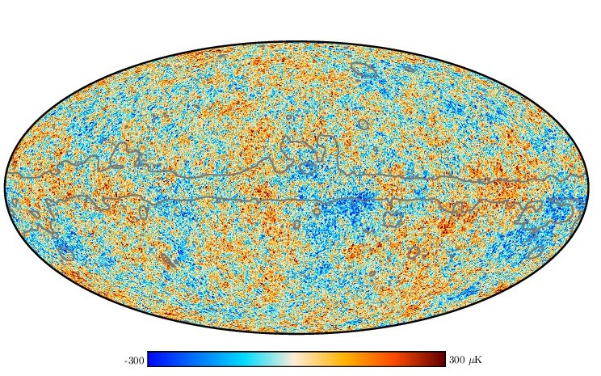
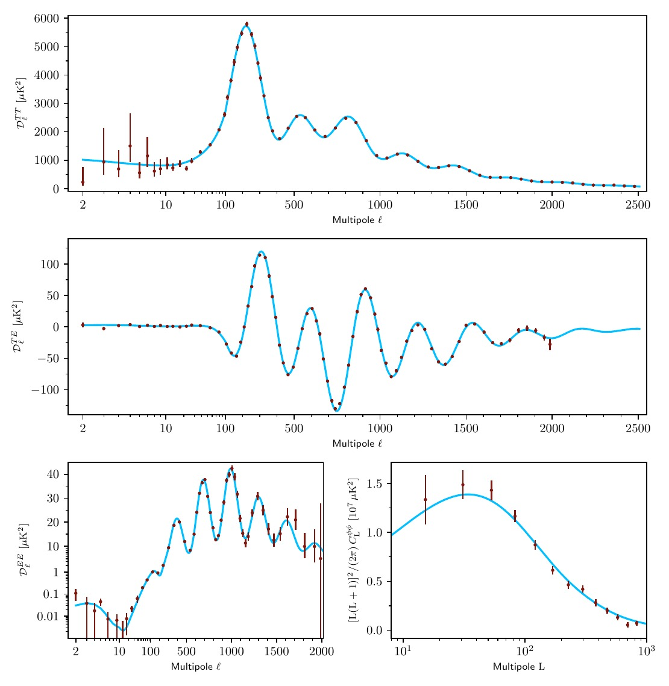
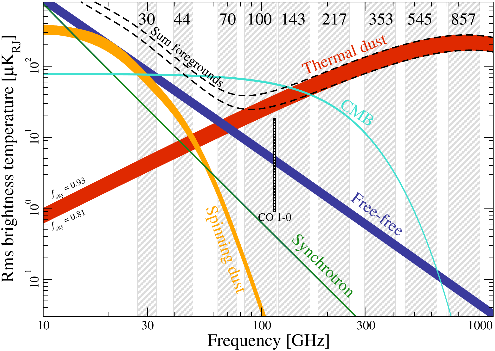
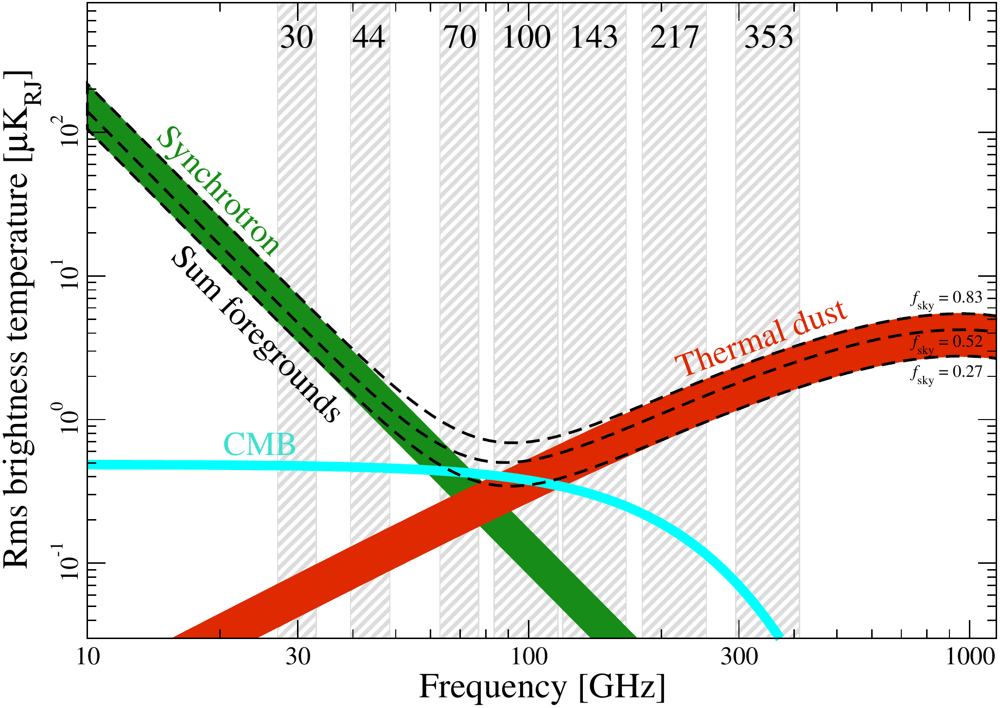

research · cosmology overview
Much of experimental cosmology is geared towards answering the fundamental question of: How did the universe originate and evolve? Over the past several decades, theoretical and experimental cosmology has advanced drastically and attempted to answer this and other prodigious questions with high precision. From Einstein’s general relativity to modern highly sensitive observations of the cosmic microwave background, we have seen an evolution in testable theories that aim to answer fundamental questions about our universe.
7 cosmic eras — each with its corresponding Simons Observatory science goal
From the Big Bang at left to today at right. The CMB (recombination) is the oldest light we can detect.

The most widely accepted theory of the history of the universe is the hot Big Bang model: our universe was once a hot, dense, opaque plasma that expanded and cooled over time. After about 380,000 years, the universe was cool enough to start forming neutral hydrogen, and photons were able to free stream — that is, there was enough room in the primordial soup for photons to not hit/scatter off of other particles floating around and break up elements. These photons (or light) that act as a faint glow that fills up the entire sky no matter where we look are known as the cosmic microwave background (CMB). This radiation was emitted at recombination, when the universe had cooled below ~3000 K (formation of neutral hydrogen). Since then, the CMB has redshifted (i.e. the wavelengths have stretched out with the expansion of the universe over billions of years) to a current temperature of T0 = 2.725 K.
The CMB appears nearly uniform across the sky, but contains anisotropies (small fluctuation) at the level 1 part in 105. These tiny density fluctuation in the early universe are the seeds of large scale structure like galaxy clusters we see today. The CMB angular power spectrum (decomposing temperature fluctuations into multipole moments ℓ) shows a series of acoustic peaks from sound waves in the primordial plasma that act as a cosmic ruler, precisely fixing cosmological parameters (Fig. 2). Over time with efforts from both space-based satellites (e.g. the Wilkinson Microwave Anisotropy Probe (WMAP) and Planck) and ground-based observatories (e.g. the Atacama Cosmology Telescope (ACT), BICEP, South Pole Telescope (SPT), and POLARBEAR), anisotropies in CMB temperature and polarization have been mapped to great precision over many angular scales. Upcoming ground-based experiments such as Simons Observatory (SO) will hit unprecedented sensitivities and provide valuable cosmological information in the coming decades. They also provide the tools and technical readiness for space-based missions to reach sensitivities that are more difficult to achieve on earth with atmospheric interference.


The Simons Observatory (SO) is a cosmic microwave background (CMB) survey experiment located in the Atacama Desert in Chile at an elevation of 5200 meters, consisting of an array of three 0.42-meter small aperture telescopes (SATs) and one 6-meter large aperture telescope (LAT). SO will make accurate measurements of the CMB temperature and polarization spanning six frequency bands ranging from 27 to 285 GHz, fielding a total of 60,000 detectors covering angular scales between one arcminute to tens of degrees (Ade et al. 2019).
A central observational challenge is separating the cosmological CMB signal from astrophysical foreground emission. Fig. 3 shows the frequency spectra of the dominant components measured by Planck. To address this, we have low frequency (LF, 30/40 GHz), mid frequency (MF, 90/150 GHz), and ultra-high frequency (UHF, 220/285 GHz) designed to understand synchrotron emission, the CMB, and thermal dust emission respectively. The SATs are tailored to search for primordial gravitational waves, with the primary science goal of measuring the primordial tensor-to-scalar ratio r at a target level of σ(r) ≈ 0.003. Currently, two MF SATs and one UHF SAT are actively observing. The UHF SAT is imperative to constraining r — thermal dust emission has been a leading systematic in this field! The LAT addresses the rest of the science cases listed below, and currently observes at all 6 bands.
The telescope sees a superposition of astrophysical signals — multi-frequency observations allow them to be separated


I have designed, integrated, tested, deployed, and commissioned instruments. In particular, I have led the ultra-high frequency small aperture telescope efforts — this is the first low-ℓ 220/280 GHz telescope to successfully take measurements on the Chilean plateau. Currently, I am making sure that this (along with other) telescopes in SO are operating successfully, making maps with the UHF SAT, calibrating the UHF SAT with planet observations, and analyzing our data for thermal dust emission to help us recover the best constraint on primordial gravitation waves possible with our instruments.